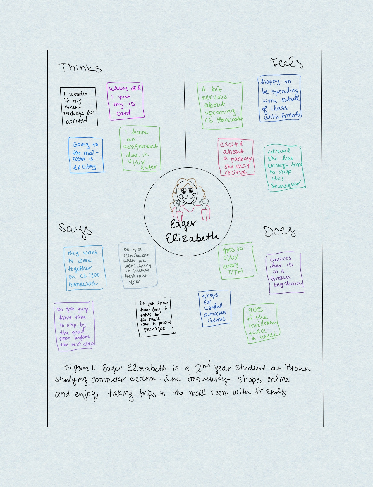

Step 1: Selecting an Interface
I began this project by selecting a public interface with enough complexity to study thoroughly.
At Brown, we use a kiosk for package pickup. When students are informed by email that they have received a package, they use this kiosk to notify staff that they would like to pickup.
Click Images to Expand
I choose this interface as it satisfies the public and complexity requirements as a multi-screen interface that most students utilize frequently.
Step 2: Preparation
Next, I began to formulate questions in preparation for my user interviews. These questions are designed to solicit insight regarding user expectations, motives, experiences, and challenges rather than product complaints or information. Below are a sample of these questions.
- How many times a week do you pickup packages?
- How comfortable do you feel using this kiosk?
- Has the interface even shown you something that you didn’t expect?
- Are there buttons or functions that you’ve never pressed?
To the right is a sketch that I drew of the interface captioned with details about its components.
Click Image to Expand
Step 3: User Interviews
After preparation, I observed three student users interacting with the interface. I selected these users myself and chose to include two seniors and one sophomore student. When conducting the interviews on these users, I was sure to make objective observations and identify any challenges they encountered.
Here is a summary of the responses from my user interviews:
- All users feel comfortable interacting with this kiosk as they use it frequently. Most come with knowledge that a package has arrived while some use the kiosk to check.
- Users learned this interface during their first year and recall reading signage and watching others.
- All observed users believe the interface information is fairly thorough although one indicated that she would like to know more about the size of packages.
- All users have experienced errors when swiping their card. Two fix the error by swiping multiple times while the other user prefers to use a new kiosk.
- Users have all never pressed the x on the first screen and didn't notice there were words written at the bottom of the interface.
The last point was surprising to me. One would think that students who use an interface frequently would be aware of words, logos, and features that they see very regularly.
Step 4: Creating Personas
Once I completed my user interviews, I created two personas based on trends that I’ve observed. Personas are fictional characters with a specific set of motives, thoughts, and goals that represent a typical user of an interface. These personas are inspired by themes I observed from my user research.
You'll see on the right that I have conveyed these personas using two, four quadrant empathy maps that detail the characters thoughts, feelings, actions, and words.
Click Images to Expand
Step 5: Creating a Storyboard
Lastly, I created a storyboard for my user interface. This storyboard depicts a character/persona's interface interaction journey from start to end. I chose to create a storyboard describing Elizabeth’s experience as I found her persona more relatable to the typical student user.
In this storyboard, Eager Elizabeth uses the interface without knowledge that she has recieved a package. This situation was one I observed while conducting user research.
To the right is storyboard submission.
Click Image to Expand
Conclusion
This project gave me a thorough introduction to the UI/UX process. I enjoyed conducting user research and applying learned UI/UX methods to an everyday interface. I was previously unaware of the thought and attention-to-detail involved in interface creation but am now appreciative of the interfaces I use naturally and effortlessly. Personas and Storyboarding gave me a new perspective on the use of everyday objects and I now feel comfortable approaching UI/UX web design assignemnts methodically.
Takeaways:
- User research is essential to developing a good UI model
- Creating personas is more involved than summarizing one observed user
- Storyboards allow designers the ability to model the use of interfaces